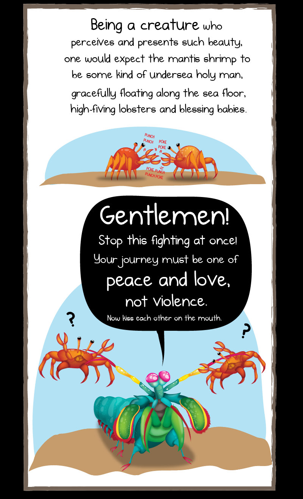
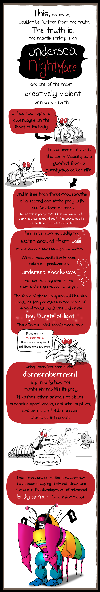
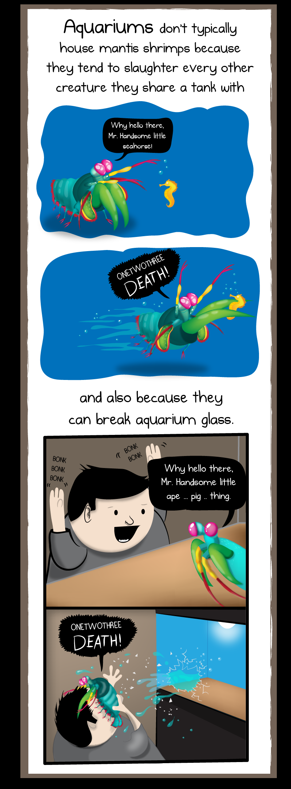

Facts about Stomatopoda.
Scientific name: Odontodactylus scyllarus
| Reino | Filo | Subfilo | Classe | Subclasse | Ordem |
|---|---|---|---|---|---|
| Animalia | Arthropoda | Crustacea | Malacostraca | Hoplocarida | Stomatopoda |
His a gentlemen
Most people have three types of light-detecting cells, or photoreceptors, which are sensitive to red, green and blue light. But the mantis shrimp has anywhere from 12 to 16 different photoreceptors in its midband. Most people assume that they must therefore be really good at seeing a wide range of colours—a “thermonuclear bomb of light and beauty”, as the Oatmeal put it. But last year, Hanna Thoen from the University of Queensland found that they’re much worse at discriminating between coloursthey’re much worse at discriminating between coloursthey’re much worse at discriminating between coloursthey’re much worse at discriminating between coloursthey’re much worse at discriminating between colours than most other animals! They seem to use their dozen-plus receptors to recognise colours in a unique way that’s very different to other animals but oddly similar to some satellites.
Undersea nightmare
Eyes are testaments to evolution’s creativity. They all do the same basic things—detect light, and convert it into electrical signals—but in such a wondrous variety of ways. There are single and compound eyes, bifocal lenses and rocky ones, mirrors and optic fibres. And there are eyes that are so alien, so constantly surprising, that after decades of research, scientists have only just about figured out how they work, let alone why they evolved that way. To find them, you need to go for a swim.
Fast and strong
Here’s an analogy: say you’ve got a big crowd lining up in front of six security guards, each of whom must shout out when they spot someone with a specific name. One recognises Adams, another targets Bobs, and so on. But the guards aren’t too bright; they wouldn’t know Adam if he introduced himself. So you make their job easier. You rig the queuing system so that only Adams line up in front of Adam-blocking guard, only Bobs reaching the Bob-blocker, and so on. The guards shout pretty much indiscriminately, but they still do their jobs correctly. They’re not specific; you impose specificity onto them.
